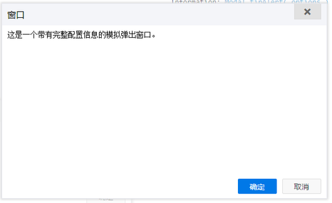
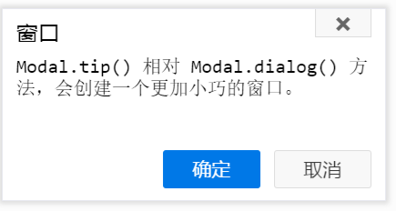

效果图
Modal 拥有十分丰富的配置选项，可以非常精确的控制弹出窗口的各个细节。通过设置不同的配置 Modal 创建了很多不同风格的窗口：
// 带有完整的配置信息
Modal.dialog({
// 窗口将添加到 document.body 节点中（默认值：document.body）
parent: document.body,
// 窗口的标题文本（默认值：窗口）
title: '窗口',
// 窗口要显示的内容正文，可以是字符串，也可以是HTML代码片段
content: '这是一个带有完整配置信息的模拟弹出窗口。',
// 窗口是否有关闭按钮（默认值：true）
hasClose: true,
// 窗口是否有遮罩层（默认值：true）
hasOverlay: true,
// 窗口是否立刻显示（默认值：true）
autoDisplay: true,
// 界面开始绘制前的回调函数
beforeBuild: function(modal){
alert('要开始绘制Dialog界面了！');
},
// 界面绘制完成的回调函数
afterBuild: function(modal){
alert('Dialog界面绘制完成了！');
},
// 界面显示前的回调函数
beforeOpen: function(modal){
alert('Dialog界面马上要显示了！');
},
// 界面显示后的回调函数
afterOpen: function(modal){
alert('Dialog界面已经显示了！');
},
// 界面开始调整窗口大小前的回调函数
beforeResize: function(modal){
alert('要开始调整Dialog的窗口大小了！');
},
// 界面调整窗口大小后的回调函数
afterResize: function(modal){
alert('Dialog的窗口大小调整完成了！');
},
// 界面开始调整窗口位置前的回调函数
beforeUpdatePosition: function(modal){
alert('要开始调整Dialog的窗口位置了！');
},
// 界面调整窗口位置后的回调函数
afterUpdatePosition: function(modal){
alert('Dialog的窗口位置调整完成了！');
},
// 界面隐藏前的回调函数
beforeClose: function(modal){
alert('Dialog的窗口马上要隐藏了！');
},
// 界面隐藏后的回调函数
afterClose: function(modal){
alert('Dialog的窗口隐藏了！');
},
// 界面销毁前的回调函数
beforeDestroy: function(modal){
alert('Dialog的窗口马上要销毁了！');
},
// 界面销毁后的回调函数
afterDestroy: function(modal){
alert('Dialog的窗口销毁了！');
},
// 给窗口设置功能按钮
buttons: [{
// 按钮文本
text: '确定',
// 按钮动作类型
action: 'enter',
// 点击按钮后，是否自动关闭按钮
autoClose: true,
// 按钮附加样式
btnCls: 'modal-button-primary',
/**
* 按钮回调函数
* @param {Object} options - 就是本按钮的配置信息
* @param {Modal} modal - 弹出窗口的实例对象
*/
callback: function(options, modal){
alert('你点击了确定按钮')
}
},{
text: '取消',
action: 'cancel',
btnCls: 'modal-button-secondary',
callback: function(options, modal){
alert('你点击了取消按钮')
}
}],
// 界面的根结点模板
TMPL_WRAP: '<div class="modal-wrap ' + CLS_HIDE + '" id="modal-{id}"></div>',
// 界面的标题栏模板
TMPL_HEADER: '<div class="modal-header"></div>',
// 界面的标题文字模板
TMPL_TITLE: '<h2 class="modal-title">{title}</h2>',
// 界面的关闭按钮模板
TMPL_CLOSE: '<div class="modal-close"><i class="icon-cross" title="关闭"></i></div>',
// 界面的BODY区域模板
TMPL_BODY: '<div class="modal-body"></div>',
// 界面的内容区域模板
TMPL_CONTENT: '<div class="modal-content"></div>',
// 界面的内容正文模板
TMPL_INFORMATION: '<div class="modal-information"></div>',
// 界面的按钮栏模板
TMPL_FOOTER: '<div class="modal-footer"></div>',
// 界面单个按钮的模板
TMPL_BUTTON: '<button type="button" data-action="{action}" class="modal-button">{text}</button>',
// 界面遮罩层模板
TMPL_OVERLAY: '<div class="modal-overlay"></div>',
// 自动关闭的延迟时间（默认：3000毫秒）
delay: 6000,
// 窗口宽度（默认值：600）
width: 600,
// 窗口高度（默认值：360）
height: 360
})Information: Modal.dialog( options )
Modal.tip() 相对 Modal.dialog() 方法，会创建一个更加小巧的窗口。

效果图 - 没有关闭按钮
Modal.tip({
tip: "Modal.tip() 相对 Modal.dialog() 方法，会创建一个更加小巧的窗口。",
width: 280,
height: 140,
hasClose: true,
hasHeader: true,
hasOverlay: true,
delay: 3000,
buttons: [{
// 按钮文本
text: '确定',
// 按钮动作类型
action: 'enter',
// 点击按钮后，是否自动关闭按钮
autoClose: true,
// 按钮附加样式
btnCls: 'modal-button-primary',
/**
* 按钮回调函数
* @param {Object} options - 就是本按钮的配置信息
* @param {Modal} modal - 弹出窗口的实例对象
*/
callback: function(options, modal){
alert('你点击了确定按钮')
}
},{
text: '取消',
action: 'cancel',
btnCls: 'modal-button-secondary',
autoClose: true,
callback: function(options, modal){
alert('你点击了取消按钮')
}
}]
});Information: Modal.tip( options )